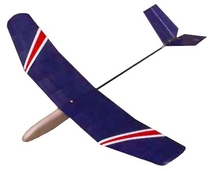

|
Recently I have been having a great time with a new HLG design I've named Miss Magoo. While slightly larger than a Mosquito class HLG, 32.75" span vs 29.5", it is still a nice little package and a lot of fun. The name comes from my feeling awfully myopic when flying it. It is small, and climbs well in very light lift. Inspiration for the design came from Dave Johnson's DAW Dragonette. After a few minutes playing with that model, I know I had to have a similar plane of my own for summer travels and impromptu local sessions. It fits neatly in the trunk of my Alfa without removing the wing. As Miss Magoo has been such a joy, I thought I would offer up a few notes. A complete plan for the model is also available, so that others can join the fun. The single sheet plan shows both wings, all parts, as well as the (old school) mechanical V-tail mixer. Complete instructions are included on the drawing as well. Note: as of June 2017, this plan is now offered through the Flying Models plans service for $12.
|
 |
Copyright 1998-2017, Thayer Syme. All rights reserved